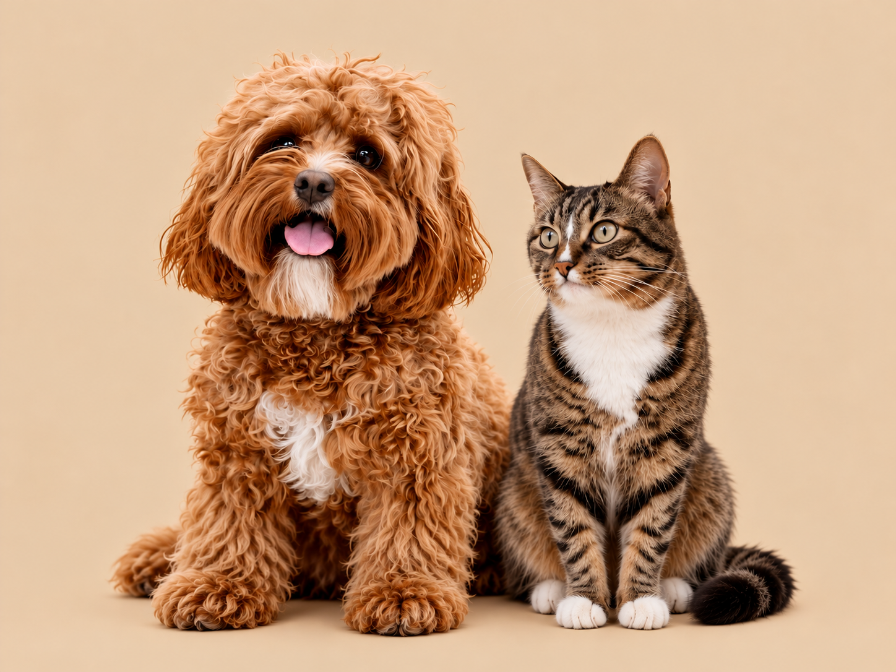

Nossa história 🐾
Muito mais que adoção, uma nova história.
Acreditamos que todo animal merece amor, cuidado e um lugar para chamar de lar.
Quem somos?
O Paws & Homes é um projeto dedicado à conscientização sobre a adoção responsável de cães e gatos.
Nosso objetivo é mostrar como a adoção pode transformar a vida dos animais e das famílias que os acolhem.

Nossa missão
Incentivar a adoção responsável e promover o respeito e o bem-estar animal.
Nosso propósito
Inspirar pessoas a oferecerem uma nova oportunidade aos animais que precisam de um lar.
ADOÇÃO RESPONSÁVEL
Dúvidas frequentes 🐾
Alguns cuidados importantes antes de receber um novo amigo.
Uma nova história começa com você!
Conheça os animais e descubra o poder da adoção.
Conheça nossos pets →